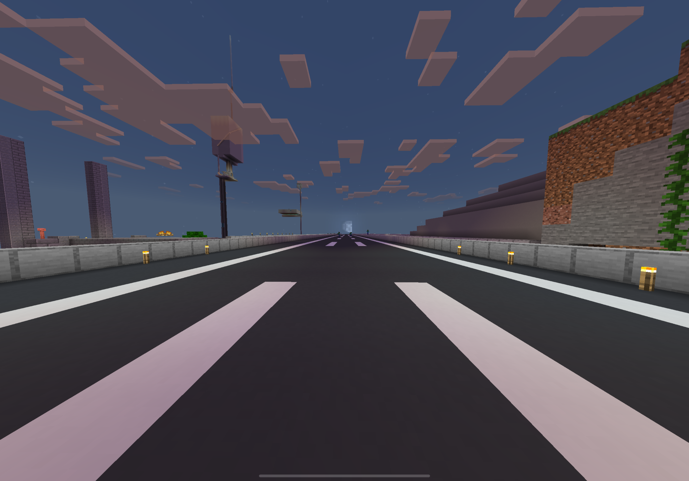
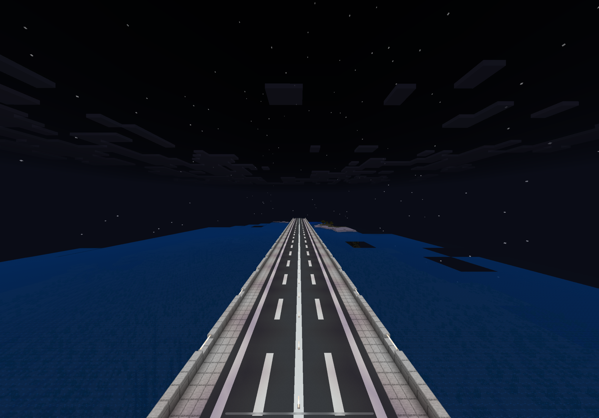

新東名高速道路
用途：拠点から海をこえて向かいの村へ行く時や、トンネルをくぐり木場の方に行く時に便利です。
説明：拠点の中心を貫き、東西に貫く第一種第一級A規格の高速道路です。
将来的には、このマイクラの世界を東西に貫く当世界の幹となる大動脈となる予定です。
大手町渋谷線

用途：大手町駅から渋谷駅や錦糸町方面に行く時に便利です。
説明：拠点の発展するにあたって欠かせない道路です。
将来的には現在の日比谷線に並行し、拠点から中目黒駅方面へ延伸する予定です。
渋谷六本木線
用途：拠点から六本木駅や錦糸町駅に行くのに便利です。
説明：大手町渋谷線のさらに西側に作られた道路です。
将来的な予定は未定です。
東西連絡線

用途：倉庫から渋谷六本木線に行くのに便利です。また道中のイカ墨トラップへのアクセスも便利です。
説明：拠点と渋谷六本木線へのアクセスを作るべく建設しました。
すでに完成しており、今後の予定はありません。
錦糸町駅前線

用途：錦糸町駅の周辺施設へのアクセスに便利です。
説明：錦糸町駅に接続している総武線に並行して建設されました。
将来的には総武線に沿ってアクセスを改善する道路になる予定です。